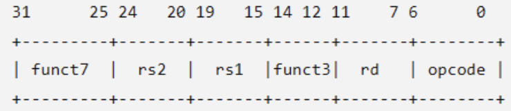
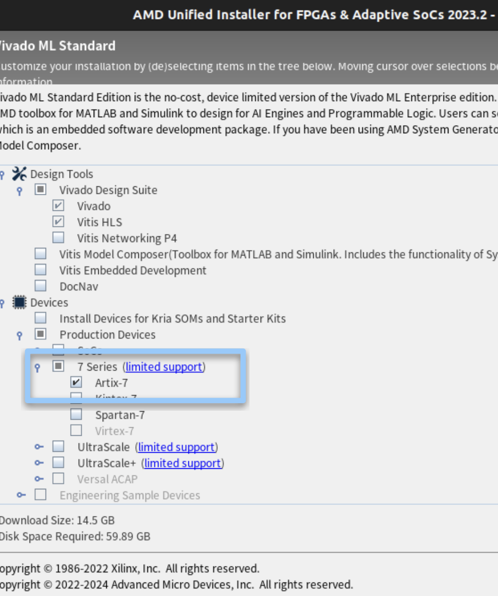
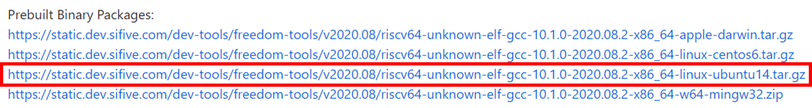

Lab 0 : Environment Setup#
Goal of this lab#
Introduction#
Throughout AAML 2026, we will use the AAML RISC-V SoC platform to explore hardware/software co-design for machine-learning acceleration. The platform integrates a RISC-V CPU, a customizable ML accelerator connected through custom instructions and AXI, and TensorFlow Lite for Microcontrollers (TFLM). In Lab 0, you will set up the required tools, program the reference SoC onto the FPGA, and run a reference TFLM application to verify the development environment for the following labs.
AAML RISC-V SoC Platform#
RISC-V CPU#
For a CPU to function, it must rely on the Instruction Set Architecture (ISA). An instruction set is a predefined list of commands that determines which operations the hardware can understand and execute. In this Lab, we use RISC-V, an open source ISA.
Our CPU supports RV32IM, with M-mode only supporting mcycle and mcycleh, and it also supports the fence.i instructions.
Moreover, the hardware supports CBO (Cache-Block Management Operations). We implement the zicbom extension, which allows software to manually manage cache coherence by cleaning or invalidating cache blocks.
Extended ISAs#
ISA is divided into two levels: the Base ISA and the Extended ISAs.
Base ISA: For RV32I as an example. it only defines the basic integer instructions that a CPU must support, such as
add,lw,sw, andbeq.Extended ISA: Depending on specific computational needs — such as floating-point arithmetic, vector and matrix processing, or even AI tensor operations — we can selectively incorporate these extensions into CPU designs.
The official specification reserves blank opcodes (such as custom-0), allowing developers like us to extend R-type formatted custom instructions.

We referenced custom-0 and R-type
Custom-0 is an opcode retained by the official
NPU can be controlled by function3 and function7
NPU (block)#
In this platform, NPU is the name of the customizable accelerator block connected to the RISC-V CPU. The CPU still runs the application and the TFLM interpreter and remains responsible for program control. Software explicitly invokes the NPU only for selected compute-intensive operations.
The CPU communicates with the NPU through a request-response interface based on a CUSTOM-0 instruction. funct3 and funct7 select the operation, while rs1 and rs2 provide two 32-bit operands. The CPU asserts NPU_start to begin an operation, which may take one or more cycles. When the operation finishes, the NPU places a 32-bit result on NPU_out and asserts NPU_done; the CPU then writes the result to rd and continues execution.
CUSTOM-0 request/result
+--------------------+ <=====================> +--------------------+
| RISC-V CPU | | Customizable NPU |
| Application + TFLM | | Compute / Control |
+---------+----------+ +----------+---------+
| CPU cache / AXI | AXI4 master
+-------------------+ +---------------------+
v v
AXI Interconnect
|
Shared DDR2
AXI#
We provide a handy introduction to the basic concepts of AXI to help you with Lab 1 and Lab 2:
TensorFlow Lite For Micro (TFLM)#
TfLM (Tensorflow Lite for Microcontrollers) is designed to run machine learning models on microcontrollers and other devices with only a few kilobytes of memory.
Based on TFLM architecture, the standard procedure for switching existing models and importing new models:
Select
List bundled models
make models make profiles make templates // Bare MODEL_FILE values are resolved under MODEL_DIR, which defaults to models.
Bundled profiles:
ad01 ad01_int8.tflite fixture input and golden output vww_96 vww_96_int8.tflite zero input, output verification skipped generic_zero fallback for new models while bring-up data is not ready
Build a specific model:
make MODEL_FILE=ad01_int8.tflite
Select a profile explicitly:
make MODEL_FILE=my_model.tflite MODEL_PROFILE=generic_zero make MODEL_FILE=ad01_int8.tflite MODEL_PROFILE=ad01
Add
Copy it into
Platform/sw/models.Register any missing kernels in
project/tflm_ops.cc.Start with
MODEL_PROFILE=generic_zeroif fixture data is not ready.Create
models/<profile>_profile.ccwhen the model needs fixture input, generated input, custom tensor handling, or golden-output verification. Usetemplates/model_profile_template.ccas the starting pattern.Implement
const ModelProfile* model_profile_get(void).For simple int8 models, fill
input_dataandexpected_output.For custom tensor types, generated inputs, or multi-output checks, set the
prepare_inputorverify_outputfunction pointers.Set
TENSOR_ARENA_SIZEif the model needs a larger arena.Run
make validate, then build withmake MODEL_FILE=<name>.tflite.
Porting AAML RISC-V SoC to FPGA#
This section will guide you through the core three steps from installing the toolchain, cloning the platform, to running the platform.
Toolchain Setup#
Step 0: Get Your FPGA Board#
Nexys A7-100T is used in this course, contact the TAs if you haven’t get one.
Step 1: Install Vivado#
Install Vivado We recommend you use version 2023.2 or version 2024.1
Make sure vivado is installed correctly on your machine before you start by running:
$ vivado -version
Since the full package of Vivado is pretty big, you may check only the
Artix-7option to save disk space and download time, and please note that the Vivado can take up to 8 hours to download, so plan to do that ahead of time!
Step 2: Install RISC-V toolchain (Download linux-ubuntu)#
Open your terminal and execute the following commands to download and extract the toolchain:

Download the August 2020 toolchain from freedom-tools and unpack the binaries to your home directory:
$ tar xvfz ~/Downloads/riscv64-unknown-elf-gcc-10.1.0-2020.08.2-x86_64-linux-ubuntu14.tar.gz
Add the toolchain to your PATH in your .bashrc or .zshrc:
export PATH=$PATH:$HOME/riscv64-unknown-elf-gcc-10.1.0-2020.08.2-x86_64-linux-ubuntu14/bin
Platform Setup#
Step 0: Initial Preparation#
Prepare a clean directory in your Linux environment and navigate into it.
Step 1: Clone the Repository#
touch {your folder name}
cd {your folder name}
git clone -b AAML-sw-dev git@github.com:TTY-RISCV/CUSTOM_SoC_Platform.git
Step 2: Set Permissions#
cd CUSTOM_SoC_Platform/Platform
chmod +x hw/run_hw.sh
Running the Platform#
Step 1: Hardware Synthesis and FPGA Bitstream Programming#
Connect the FPGA board to your machine by the USB port
Run the following command to synthesize the hardware and program the bitstream into the FPGA board
make prog
Make sure this step is done correctly before moving to the next step
Step 2: Running the Software#
Run the following command to compile the software application and initiate interaction with the FPGA
make run MODEL_FILE=ad01_int8.tflite MODEL_PROFILE=ad01
When you see the line “Listening on /dev/ttyUSB1 for BIOS/App” on your terminal, press the CPU Reset button.
After that, you should see the menu on your terminal that you can play around with.
(More details on software to be added)
Detail Reference on How to Use the Platform#
See the documentation for [hardware](to be placed) and [software](to be placed)